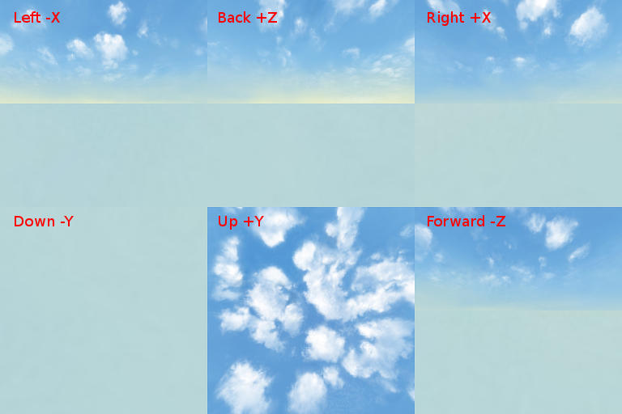

纹理¶
纹理是手工制作的或程序上生成的图像，可应用于模型表面，以添加更多的细节。依据规则，图像像素使用纹理映射的方法被分配到三维表面上。有时它们统称为贴图。
通常的纹理被放入 材质 纹理插槽。他们可以也被用于 粒子系统 参数化和用于创建 天空纹理.
通用设置¶
- 尺寸
图像纹理的位图尺寸 （图像宽度和高度，以像素为单位） 应为 2N，即 4、 8、 16、 32、 64、 128、 256、 512、 1024，2048、 4096 px。与其他尺寸的 (所谓 NPOT) 纹理是支持但不是建议使用。为纹理压缩图像至少 4 像素。通常使用方形图像 (例如 512 x 512 px)，但是也可以使用矩形的 (如 4 x 128 px)。不推荐使用图像大于 2048 像素的图。
- 图像贴图 > 扩展
纹理坐标解释模式 （在 WebGL 交换模式）。这是可用于
图像或电影纹理类型。在重复值设定的情况下由引擎设置纹理的重复模式。在这种情况下纹理坐标的整数部分被忽略、小数部分被使用。在所有其他情况下 （例如扩展） 引擎设置CLAMP_TO_EDGE模式。在这种情况下纹理坐标限制到 [0，1] 段。默认值是重复.
- 贴图 > 坐标
纹理坐标类型。支持的类型是
UV（使用 UV 映射），法线(直对相机，只供的漫反射贴图，用于创造 材质捕捉, matcap) 和生成。默认值是生成。- 贴图 > 大小
沿着各自的轴缩放 UV 贴图。默认值是 1.0。
- 导出选项 > 不导出
不导出纹理。
- 导出选项 > 禁用压缩
禁用这个纹理的纹理压缩。在 纹理压缩 恶化图像质量情况下使用。例如用于混合材质的不同部分建议禁用压缩遮罩纹理。
- 导出选项 > 海岸距离贴图
使用在 室外渲染.
- 导出选项 > 各向异性过滤
各向异性过滤单独对纹理进行影响。对场景其他类似的参数有更高优先级别。默认值是
默认（即使用场景设置）。- 水泡沫
泡沫的纹理。在水的材质中使用。
注解
纹理使用法线贴图时纹理压缩被禁用。
漫射贴图¶
漫射贴图用于指定散射光的分布 （Lambert 模型）。
激活¶
启用 纹理 > 影响 面板上的 漫射 > 颜色 复选框。
附加设置¶
- 影响 > 漫射 > 颜色
对漫反射颜色上的纹理的影响。默认值是 1.0。
- 影响 > 混合
与材质颜色相互作用的类型 (
材质 > 漫反射 > 颜色)，或与顶点颜色如果启用了顶点颜色绘制选框。支持以下类型:混合（混合的颜色），相乘（乘以颜色）。默认值是混合。
高光贴图¶
高光贴图用于指定反射光的颜色分布 （Phong 模型）。
激活¶
启用 纹理 > 影响 面板上的 镜面 > 颜色 复选框。
附加设置¶
- 影响 > 镜面 > 颜色
对反射光颜色纹理的影响。默认值是 1.0。
- 影响 > 混合
反射光的颜色与材质的交互作用的类型 (
材质 > 镜面 > 颜色)。混合（用颜色混合） 是唯一受支持的类型。默认值是混合。
出于优化的目的高光贴图可以打包到的漫射纹理的 alpha 通道中。在这种情况下是纹理同时启用 漫射 > 颜色 和 镜面 > 颜色 复选框。颜色范围被限制在灰色色调。
法线贴图¶
法线贴图用于指定的表面法线 （垂线） 分布为了立体的细节。关于法线信息应存储在纹理空间的坐标。法线贴图不支持在对象空间坐标的烘焙。
附加设置¶
- 影响 > 几何 > 法线
法线贴图影响产生的法线计算。默认值是 1.0。
高度图。视差贴图¶
高度图包含相对宽缓的高度分布信息。表面的高度越高，颜色越明亮。高度图结合法线贴图都能展示立体效果 （视差贴图） 的实现。高度图应该出现在法线贴图的 alpha 通道。

激活¶
对于法线贴图在 几何 > 正常 复选框的 视差 面板启用。
附加设置¶
- 视差 > 视差缩放
表面立体效果的影响因素。默认值为 0.03。
- 视差 > 视差步
为立体表面计算的迭代次数。更大的值导致更好的质量但更多更昂贵的计算。
- 视差 > 视差 LOD 距离
观察者的距离视差效应。

蒙版贴图¶
特殊用途纹理 (彩色或灰度) 包含有关其他纹理表面的分布信息。
激活¶
如果节点材质蒙版贴图应该用于相应的节点结构。
在通用材质的情况下蒙版贴图应位于两个混合弥漫纹理之间的纹理插槽。蒙版贴图要求同时启用
纹理 > 影响面板上设置RGB到强度和蒙版复选框。
附加设置¶
有一个混合的漫射纹理的通用的材质可以有 法线 (“matcap”) 纹理坐标类型。
限制条件¶
在通用材质的情况下，引擎只是使用蒙版贴图的红色通道。高光贴图或法线贴图（如果有） 不能混合在一起。映射 > 尺寸 设置从第一个纹理提取并应用于所有剩余的纹理。


视频贴图¶
如果选择了 图像或电影 纹理类型，视频文件可以用作纹理。
注解
视频纹理只是视频轨道支持播放。音频轨道应使用的 扬声器 物体来播放。
支持的格式 （容器） ︰¶
webm VP8 编解码器 （Chrome、 火狐浏览器）
m4v，H.264 编解码器 (Chrome，Safari，IE)
ogv，Theora 编解码器 （Chrome、 火狐浏览器）
我们推荐使用 WebM 作为基本的格式。它是绝大多数浏览器所支持的开放标准，并提供不错的画质。
注解
保存为 mp4 和 ogg 格式的文件有不同的音频和视频数据的扩展: .mp4 和 .ogg 扩展用于声音，.m4v 和 .ogv - 是视频。
不同格式之间的资源转换的描述在 相应章节.
设置纹理¶
下面是 纹理 > 图像 面板上的视频纹理可设置项 :
- 图像 > 帧数
在帧中播放片段的长度。
- 图像 > 偏移
开始播放视频的帧数。
- 图像 > 循环
完成每次重新启动视频播放。
- 图像 > 允许 NLA
作为 NLA 轨道部分的播放出来的纹理。此外，在通过激活
场景 > NLA全局场景设置中启用 NLA。默认情况下启用。
NLA 控制纹理以下选项也是适用的 ︰
- 图像 > 开始
视频播放延迟 （帧） 时使用的非线性动画。
对于非 NLA 控制纹理以下选项也是适用的 ︰
- 图像 > 自动刷新
场景加载后立即播放视频。

可以增加视频播放速率。要这样做需设置 场景 > 尺寸 > 帧速率 和视频的 FPS 值是不同的值。视频播放率是按比例增加到场景的 FPS 和视频的 FPS 的比例。
注解
当视频纹理与 NLA 一起使用时，视频播放可以不对应与Blender设置。即，可能观察到5 6 帧延迟是由于 <video> HTML 元素的开始/暂停的延迟。
环境贴图¶
环境贴图可以用作 镜面贴图, 作为一个静态 天空纹理 (天穹) 也可以实现 环境照明 方法。
引擎就默认作为立方体的纹理。环境贴图的位图应该包含环境图像6个方向投影，封装在 2 行 每行3 件 Blender格式）。为每个图像的位图大小应遵循 2N 规则 (512、 1024 等)。
为了避免接缝，建议使用无损格式 (PNG) 。

{kind=link}
{kind=link}
天穹¶
天穹用于无穷远的环境可视化（例如天空）。这是 环境贴图.
也可用来实现 环境照明 方法。
{kind=link}
特殊的纹理类型¶
为了使用这种纹理，选择 无 类型下的 纹理 选项卡。

在 纹理 > 导出选项 面板上，您可以对这些纹理设置属性 ︰
- 导出选项 > 源类型
选择纹理类型:
场景- 用于渲染 3D 场景成为纹理，画布-使用<canvas>HTML 元素和``无`` - 用于指明没有类型。- 导出选项 > 源 ID
要渲染到纹理的场景名称 （为
场景） 或 <canvas> 的 HTML 元素ID 的名称（为画布）。- 导出选项 > 源大小
纹理分辨率。
- 导出选项 > 扩展
纹理坐标解释模式. 默认值是重复。
- 导出选项 > 启用纹理多级映射（Mipmap）
为画布纹理启用纹理多级映射。默认情况下启用。

渲染到纹理¶
三维场景实时渲染的图像可以用作其他场景（”主” 场景）的物体纹理。这种技术被称为渲染到纹理 (RTT)，可以通过以下步骤激活︰
创建将被渲染到纹理的附加场景。
为方便起见，给这一场景的唯一名称。
场景中设置摄像机和光源
在3D场景添加你需要的物体：
场景中设置摄像机并设置
然后，切换到主场景。
选择目标物体，并为它创建一个UV贴图。
创建一个纹理将作为渲染目标。
设置纹理类型为
None对于
Mapping选项卡下的Coordinates参数设置UV值。在
导出选项 > 源类型菜单中选择场景类型。在
导出选项 > 源 ID字段中指定源场景的名称。在
导出选项 > 源大小字段 （以像素为单位） 设置纹理的大小。

引擎还支持场景相互循环渲染。
注解
项目应包含至少一个场景，不由任何其他场景渲染完成。
画布纹理¶
一个 <canvas>HTML 元素可以用作纹理。它可以通过 API 修改。
设置主场景目标物体为 无 类型的纹理，在 导出选项 > 源类型 菜单中选择 画布 类型。在 导出选项 > 源字号 字段 （以像素为单位） 设置纹理的大小。
使用 纹理 模块来处理这种纹理。请参阅下面的示例。
var m_tex = require("textures");
...
var obj = m_scenes.get_object_by_name("NAME");
var ctx = m_tex.get_canvas_ctx(obj, "TEXTURE_NAME");
...
// operations with canvas context
...
m_tex.update_canvas_ctx(obj, "TEXTURE_NAME");
使用 get_canvas_texture_context() 来获取上下文-此方法需要的 “canvas_id” 标识符应在Blender中定义。当 与上下文操作, update_canvas_ctx() 功能被调用，渲染 “canvas_id” 元素的修改。
注解
如果在Blender中画布类型材质分配给了几个不同的物体，待引擎加载后它仍然将一个纹理而不是几个不同的。应用于它的任何更改将应用于所有使用此纹理的物体，可用于优化的目的。万一不需要这种效果，你在Blender中应指派不同的纹理，或在引擎启动后使用 深度复制 。